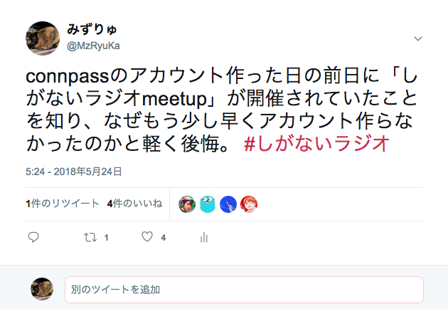
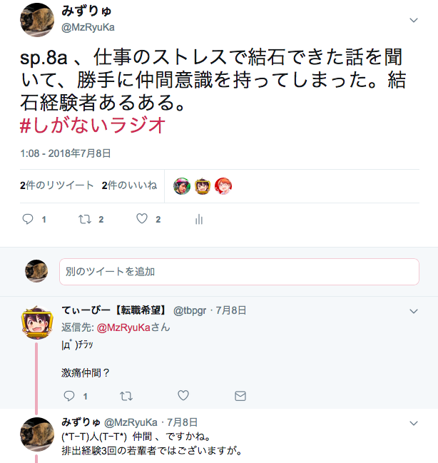
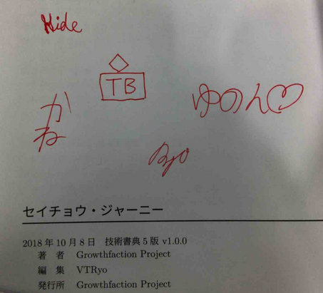

Your browser doesn't support the features required by impress.js, so you are presented with a simplified version of this presentation.
For the best experience please use the latest Chrome, Safari or Firefox browser.
しがないラジオ meetup2
2018/11/28 @MzRyuKa
やはり俺の転職しなかった
世界線は間違っている？
自己紹介
・みずりゅ(@MzRyuKa)
・新卒で独立系SIerで、いま1X年目
・SIerあるあるは大体経験した
- 例：
- 「新人だけど徹夜」「ダンボールってあったかい」「ベンダー独自フレームワーク」「標準化」「理不尽な、なぜx3分析」
- 「リリース全国行脚」「炎上案件ヘルプでタコ部屋に長机のパイプ椅子」「中国オフショア」「ストレスで結石」
- 「請負アジャイル(10人体制)」「PO+SMを兼務」「リーダ逃走」「雇われPMをもつPL」
とある日常
毎日 毎日
仕事は保守ばかり
エクセル＋パワポで
嫌になっちゃうよ
ある時、わたしは、
しがないラジオ meetupを見つけて
はじめてハッシュタグをつけて
呟いたのさ

はじめて外に向けて呟いた
しがないラジオ
というキーワード。
しかし、これを境に
世界は変わっていった。
聴いたPodcastの感想は
ハッシュタグをつけて
呟くようにした。
情報発信している人に少しでも
感謝の気持ちが届くように。
するとこんな風に出会いも広がる

気になったイベントや勉強会には
積極的に参加するようにした。
この結果、技術書典5で
zuckeyさんとgamiさんにもあうことができた。
それと「セイチョウジャーニー」著者全員のサインもGetしたYo!
成果のひとつ(サイン本)

できる範囲で外に向かって
アウトプットをするようにした。
- ・ブログを始めた
- ・社外でLTした
- ・Podcastにも出演してみた
出演Podcast：
・deploy.fm: 第10回、第10回おまけ回
・aozora.fm: 出演予定(12月中旬以降？)
そして今
この場でLTをしている。
これが背中を押してくれた人への
恩送りになると思って。
zuckeyさん、gamiさん、いけさん。
「この一歩 踏み出したぜ！」
#しがないラジオ
sp.35【ゲスト: otty_375】楽しい「しがないラジオ駆動人生」
の1:55:00近辺でしているお話。
https://shiganai.org/ep/sp35-otty_375
会社に対しても行動した
- ・社内勉強会への企画出し
(モブプロ、ユーザストーリーマッピング、心理的安全性ゲーム等)
- ・個人参加イベント／勉強会のレポート提出
（5ヶ月で29個中15個記述）
- ・面白そうな勉強会/イベントの定期的な紹介
- ・アドベントカレンダーの提案／実施(New)
あー、なんだ。
これが自分にとっての
「たのしくて仕方がない」
ことかもしれない。
もしかしたら、これは転職しなかったあなたの10年後の姿、かもしれない。
そして、あなたたちは、私が転職していた時に歩んでいたかもしれない別の世界線の自分かもしれない。
しがないラジオとその界隈は
夢の国である。
でも、目醒めても消えはしない。
いつでも楽しさを思い出せる。
この界隈の住人たちは
自らの境遇に絶望せず
未来を見つめ
仲間を見つけ
そして自らの足で
次のステージに進んでいった。
彼ら／彼女らのような人々が
今後も増えていけば
エンジニアの世界
きっと安泰だろう。
zuckeyさん、gamiさん。
これからもしがないラジオで
楽しくて仕方がない人たちを
送り出してください！